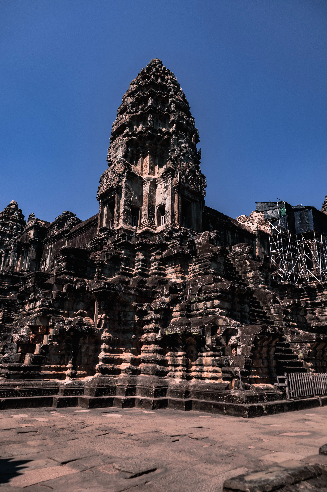

ប្រាសាទអង្គរវត្ត ឬប្រាសាទអង្គរតូចមានទីតាំងស្ថិតនៅភាគខាងជើងនៃក្រុងសៀមរាបនៃខេត្តសៀមរាប។ ប្រាសាទអង្គរវត្តជាប្រាសាទព្រហ្មញ្ញសាសនាធំបំផុត និងជាវិមានសាសនាដ៏ធំបំផុតនៅក្នុងលោក។ ប្រាសាទនេះត្រូវបានកសាងឡើងដោយព្រះបាទសូរ្យវរ្ម័នទី២ ដែលជាស្នាដៃដ៏ធំអស្ចារ្យ និងមានឈ្មោះល្បីល្បាញរន្ទឺសុះសាយទៅគ្រប់ទិសទីលើពិភពលោក។ ប្រាសាទនេះសាងសង់ឡើងនៅដើមសតវត្សទី១២ ដែលស្ថិតនៅក្នុងរាជធានី យសោធរបុរៈ។ ប្រាសាទអង្គរវត្តជាប្រាសាទកសាងឡើង ដើម្បីឧទ្ទិសដល់ព្រះវិស្ណុ។ ប្រាសាទនេះជាប្រាសាទដែលនៅគង់វង្សល្អបំផុតនៅក្នុងតំបន់អង្គរ។ប្រាសាទអង្គរវត្ត ប្រើកម្លាំងពលកម្មប្រម៉ាណជាង 30មុឺននាក់ និង ដំរី ជាង 6ពាន់ក្បាល និងប្រើប្រាស់ថ្ម សរុបប្រមាណជាង 10លានតោន។នៅក្នុងប្រាសាទមានចម្លាក់អប្សរាយ៉ាងស្អាត ចំណែកឯទីធ្លាខាងក្រៅមានដើមត្នោតរួមទាំងទេសភាពដ៏ស្រស់បំព្រង ហើយនៅជុំវិញប្រាសាទប្រាសាទអង្គរវត្តត្រូវបានរចនាដើម្បីតំណាងភ្នំព្រះសុមេរុ ដែលជាទីលំនៅរបស់អាទិទេព និងទេវតាក្នុងទេវកថាហិណ្ឌូ ដែលមានកសិ្សណ ឬគូទឹកព័ទ្ធជុំវិញប្រហែលជា ១៦គីឡូម៉ែត្រ ចំណែកកសិ្សណពិតប្រាកដរបស់ប្រាសាទ មានបណ្តោយប្រវែង ១៥០០ម៉ែត្រ x ទទឹង១៣០០ម៉ែត្រ លើ២០០ម៉ែត្រ ផ្លូវធំដើរចូលពីទិសខាងលិចទៅដល់ប្រាសាទកណ្តាលមានប្រវែង ២៥០ម៉ែត្រ ឯកំពូលកណ្ដាលខ្ពស់ធំជាងគេបំផុតរបស់នគរវត្ដ មានកម្ពស់ ៦៥ម និងជញ្ជាំងខាងក្រៅវែងគឺជាថែវមានបីជ្រុង ដែលថែវនីមួយៗឡើងខ្ពស់ទៅថែវដែលជាប់គ្នា។ នៅចំកណ្ដាលនៃប្រាសាទបញ្ឈរនូវជួរចតុរង្គនៃប៉ម។ មិនដូចប្រាសាទនៅតំបន់អង្គរភាគច្រើនទេ អង្គរវត្តបែរមុខទៅទិសខាងលិច តាមការស្រាវជ្រាវរបស់អ្នកសិក្សាបានវែកញែកថាជាចំណុចសំខាន់នៃប្រាសាទនេះ។ ប្រាសាទនេះត្រូវបានគេកោតសរសើរដោយសារភាពសម្បើម និងរុងរឿងនៃស្ថាបត្យកម្មនេះ ចម្លាក់ដែលលាតសន្ធឹង និងដោយសារស្ថាបត្យកម្មខ្មែរមានរូបអប្សរា និងទេវតា ដែលឆ្លាក់នៅលើជញ្ជាំងប្រាសាទ។
អង្គរ តាមវចនានុក្រមរបស់លោកគ្រូ ពៅ សាវរស អង្គរមកពីពាក្យសំស្ដ្រ នគរ មានន័យថា ទីក្រុង រាជធានី អាណាចក្រ ។ រីឯពាក្យវត្ត ជាទីដែលមានព្រះសង្ឃគង់នៅ។ រួមន័យមក អង្គរវត្ត មានន័យថាជាទីក្រុងដែលមានវត្តព្រះពុទ្ធសាសនា។ តាមវចនានុក្រមគឺវាបានមកពី នគរវត្ត ជាឈ្មោះប្រាសាទបុរាណមួយកន្លែងនៅក្នុងខេត្តសៀមរាប ជាមហាមន្ទីររុងរឿងដោយលំអគ្មានពីរ (ហៅក្លាយមកជាអង្គរវត្ត)។ ពាក្យ នគរនេះច្រើនតែមានសំឡេងក្លាយឃ្លាតជាអង្គរដូច្នេះឯង ដូចជានគរបាល នគរបុរី នគរយមរាជ នគរវត្តក្លាយជាអង្គរបាល អង្គរបុរី អង្គរជមរាជ អង្គរត្តជាដើម។ ប្រាសាទអង្គរវត្តមានឈ្មោះដើមថា "បរមវិស្ណុលោក"។ ការវិវត្តនៃឈ្មោះ អង្គរវត្ត នេះអាចត្រូវបានគេយកមកប្រើតាមប្រវត្តិសាស្ត្រ។ តាមសិលាចារឹកនៅសតវត្សទី១៦ បញ្ជាក់ថា ឈ្មោះប្រាសាទអង្គរវត្តគឺ ព្រះមហានគរឥន្ទ្រប្រ័ស្ថព្រះពិស្ណុលោក។ ពាក្យ ឥន្ទ្រប្រ័ស្ថ មានន័យថា "ទីក្រុងរបស់ព្រះឥន្ទ្រ"។ មួយចំណែកទៀតនៅសតវត្សរ៍ទី១៧ ត្រូវបានគេហៅថា ឥន្ទបត្តម្ភានគរស្រីសុធរវពិស្ណុលោក។ បើតាមវចនានុក្រមសម្តេចសង្ឃរាជ ជួន ណាតពាក្ថាយ ឥន្ទបត្ត ឬ ឥន្ទ្រប្រ័ស្ថ នេះមានសេចក្ដីពន្យល់ដូចតទៅ៖ ឈ្មោះក្រុងមួយក្នុងប្រទេសឥណ្ឌាសម័យត្រង់កន្លែងក្រុងទេល្ហីសព្វថ្ងៃនេះ។ ប្រជាជនខ្មែរ សម័យមហានគរ ប្រើពាក្យនេះជាវិសេសនាមឬជាគោរមនៃក្រុមមហានគរ ច្រើនប្រើក្នុងព្រះបរមរាជសាសន៍ ឬព្រះបរមរាជឱង្ការ ថា ព្រះបាទសម្តេចព្រះរាជឱង្ការបរមបពិត្រកម្ពុជាធិបតីស្រីឥន្រ្ទប្រ័ស្ថបុរីរ័ត្នរាជធានី (ប្រើពាក្យនេះតាំងអំពីបានព្រះខ័នរាជ្យ ដែលមានសេចក្ដីតំណាលថា ព្រះឥន្រ្ទយកមកប្រទានទុកជាកេរ្តិ៍ជាសស្រ្តាដ៏វិសេសសម្រាប់កម្ពុជារដ្ឋ។ ចំពោះប្រជាជនខ្មែរជាពិសេសអ្នករស់នៅខេត្តសៀមរាបច្រើននិយមហៅឈ្មោះរួមមួយថា អង្គរតូច។ ទោះបីជាយ៉ាងណាក៏ដោយ អ្នកនិពន្ធនៅលើពិភពលោកទាំងអស់បានកំណត់ហៅឈ្មោះរួមមួយថា អង្គរវត្ត រហូតមកដល់បច្ចុប្បន្ន។ ឈ្មោះសម័យថ្មី អង្គរវត្តមានន័យថា ទីក្រុងវត្ត ក្នុងភាសាខ្មែរ អង្គរមានន័យថា ទីក្រុង រឺ ទីក្រុងធានី ជាទម្រង់ប្រាក្រឹតនៃពាក្យ នគរ ដែលមកពីពាក្យភាសាសំស្ក្រឹត nagara (नगर)។ វត្តគឺជាពាក្យខ្មែរសម្រាប់ ទេវាល័យលើដី បានមកពីពាក្យបាលី "vatta" (वत्त)។ មុនពេលនេះ ប្រាសាទនេះត្រូវបានគេស្គាល់ថាជា បរមវិស្ណុលោក (Parama Vishnuloka ជាភាសាសំស្ក្រឹត) បន្ទាប់ពីងារបច្ឆាមរណៈនៃស្ថាបនិកនៃប្រាសាទ។ អត្តបទសិលារឹកនគរវត្តភាគច្រើនបង្ហាញថា អ្នកស្រុកនៅចង់ចាំបាននៅឡើយនៅឈ្មោះដើមរបស់ប្រាសាទនេះ ដោយគេហៅថាស្ថានព្រះវិស្ណុលោក ឬមហាវិស្ណុលោក។ ឈ្មោះនេះមានន័យមិនខុសពីឈ្មោះដើមថា បរមវិស្ណុលោកនោះទេ។
ប្រាសាទអង្គរវត្តបានសាងសង់ នៅដើមសតវត្សរ៍ទី១២ ដោយព្រះបាទសូរ្យវរ្ម័នទី២(ខ្លះសរសេរ : ព្រះបាទសូរិយាវរ្ម័នទី២)(១១១៣-១១៥០) ដើម្បីឧទ្ទិសថ្វាយព្រះវិស្ណុ ក្នុងព្រហ្មញ្ញសាសនា។ ក្នុងនោះផងដែរ ប្រាសាទនេះមានលក្ខណៈល្អវិចិត្រ និងបង្ហាញនូវសិល្បៈខ្មែរដ៏អស្ចារ្យដល់កំពូល។ បើតាមលោកហ្សក-សឺដែស ប្រាសាទអង្គរវត្តគឺតំណាងឲ្យពិភពលោក។ ប្រាង្គកណ្តាលតំណាងឲ្យភ្នំព្រះសុមេរុដែលស្ថិតនៅកណ្តាលពិភពលោក។ ប្រាង្គទាំង៥ តំណាងឲ្យកំពូលភ្នំព្រះសុមេរុដែលជាជាយផែនដី និងគូទឹកព័ទ្ធជុំវិញប្រាសាទគឺ ជាសមុទ្រដែលព័ទ្ធជុំវិញ។ ប្រាសាទអង្គរវត្តមានឈ្មោះដើមថា ប្រាសាទបរមវិស្ណុលោក។ ប៉ុន្តែការវិវត្តនៃឈ្មោះអង្គរវត្តនេះ អាចត្រូវបានគេយកតាមប្រវត្តិសាស្រ្ត។ ស្លាកស្នាមដំបូងគឺ មាននៅសតវត្សរ៍ទី១៦។ ជាការពិតណាស់ប្រាសាទនេះបាន ក្លាយទៅជា កន្លែងពុទ្ធសាសនាដ៏ល្បីល្បាញមួយ។ តាមសិលាចារឹកនៅសតវត្សរ៍ទី១៦ ឈ្មោះនៃប្រាសាទអង្គរវត្តគឺ ព្រះមហានគរឥន្រ្ទប្រត្ថព្រះពិស្ណុលោក (ឥន្រ្ទប្រត្ថ ជាភាសាសំស្រ្កឹត ហើយបានក្លាយទៅជាភាសាបាលី ឥន្ទបត្ត បញ្ជាក់ទៅលើការឆ្លងពីព្រហ្មញ្ញសាសនា ទៅព្រះពុទ្ធសាសនាហីនយាន។ ពាក្យឥន្រ្ទប្រត្ថ មានន័យថា ទីក្រុងរបស់ព្រះឥន្ទ ។ ក្នុងព្រហ្មញ្ញសាសនា គេជឿថាព្រះឥន្ទមានទីកន្លែងនៅលើដី។ ពាក្យនេះជាកន្លែងសម្រាប់ គោរពបូជា។ ឧទាហរណ៍ដូចជា វត្តទាំងពីរនៅក្នុង ប្រាសាទអង្គរវត្តមានឈ្មោះថា ឥន្ទបត្តបុរីខាងត្បូង និង ឥន្ទបត្តបុរីខាងជើង ។ ការហៅទៅលើឈ្មោះថា ពិស្ណុលោក គឺសម្រាប់រំលឹកទៅដល់ មរណៈនាមរបស់ស្តេច ដែលបានកសាងប្រាសាទនេះ គឺ បរមវិស្ណុលោក រីឯ ស្រីសុធរ ជាការហៅដើម្បីរំលឹកឡើងវិញ ទៅលើឈ្មោះទីក្រុងចាស់នៅអង្គរ ឈ្មោះថា ស្រីយសោធរបុរៈ ។) ហើយមួយចំណែកទៀតនៅសតវត្យរ៍ទី ១៧ ហៅថាឥន្ទបត្តម្ភានគរ ស្រីសុធរវពិស្ណុលោក ។ ចំណែកឈ្មោះថាអង្គរវត្ត គឺជាឈ្មោះសាមញ្ញសម្រាប់កំណត់បូជនីយដ្ឋាននេះ។ ចំពោះប្រជាជនខ្មែរ ពិសេសអ្នករស់នៅខេត្តសៀមរាប ច្រើនហៅឈ្មោះរួមមួយគឺ អង្គរតូច។ ទោះបីជាយ៉ាងណាក៏ដោយ អ្នកនិពន្ធអឺរ៉ុប ទាំងអស់បានកំណត់ហៅឈ្មោះរួមមួយគឺអង្គរវត្តដែរ។ប្រាសាទអង្គរវត្តត្រូវបានបញ្ចូលទៅក្នុងបញ្ជីបេតិកភណ្ឌពិភពលោករបស់អង្គការយូណេស្កូ នៅឆ្នាំ១៩៩២។ ប្រាសាទអង្គរវត្តត្រូវបានរកឃើញឡើងវិញដោយ ធម្មជាតិវិទូបារាំងលោក អង់ហ៊្រី-មូហ៊ត(Henri Mouhot) នៅឆ្នាំ១៨៦០។
អង្គរវត្តត្រូវបានការស្ដារឡើងវិញច្រើននៅសតវត្សទី២០ ជាសំខាន់ការយកដីរុំកោះនិងសារពើរុក្ខជាតិចេញ។ ការងារត្រូវបានអាក់ខានដោយសង្គ្រាមរដ្ឋប្បវេណី និងការគ្រប់គ្រងប្រទេសដោយខ្មែរក្រហមកំឡុងទសវត្ស១៩៧០ និង១៩៨០ ប៉ុន្តែការបំផ្លិចបំផ្លាញតិចតួចដោយប្រៀបធៀបត្រូវបានធ្វើកំឡុងសម័យនោះ ក្រៅពីនេះទៅមានពួកចោរ និងការបំផ្លាញនូវរូបចម្លាក់សម័យក្រោយអង្គរភាគច្រើនទៀត។ ប្រាសាទនេះគឺជានិមិត្តរូបពោរពេញដោយថាមពលរបស់កម្ពុជា និងជាប្រភពនៃមហាមោទនភាពជាតិដែលបានដាក់ជាកត្តាក្នុងទំនាក់ទំនងការទូតរបស់កម្ពុជាជាមួយបារាំង សហរដ្ឋ និងអ្នកជិតខាងរបស់ខ្លួន ថៃ។ រូបគំនូរនៃអង្គរវត្តធ្លាប់ជាផ្នែកមួយនៃទង់ជាតិនានារបស់កម្ពុជាចាប់តាំងពីការដាក់បញ្ចូលនូវកំណែលើកទីមួយ រង្វង់ឆ្នាំ១៨៦៣។ ដោយសារទស្សនៈវិស័យខាងប្រវត្តិសាស្ត្រកាន់តែធំ និងបរិវត្តវប្បធម៌ថែមទៀត យ៉ាងណាៗ ប្រាសាទអង្គរវត្តនេះមិនបានក្លាយត្រឹមតែជានិមិត្តរូបនៃមោទនភាពជាតិផ្ទាល់ជាតិសាសន៍នោះទេ ប៉ុន្តែក៏ត្រូវបានដាក់បញ្ចូលទៅក្នុងដំណើរការនយោបាយ-វប្បធម៌នៃផលិតកម្មកេរដំណែលបារាំង-អាណានិគម ក្នុងនោះដែលទីស្ថានប្រាសាទដើមត្រូវបានតាំងបង្ហាញក្នុងពិព័ណអាណានិគមបារាំងនិងសកលនៅប៉ារីសនិងម៉ាខ់សីរវាងឆ្នាំ១៨៨៩ និង១៩៣៧។ មរតកសិល្បៈដ៏រុងរឿងនៃអង្គរវត្តនិងបូជនីយដ្ឋានខ្មែរផ្សេងៗនៅតំបន់អង្គរបានដឹកនាំបារាំងដោយផ្ទាល់ទទួលយកកម្ពុជាជាអាណាព្យាបាលនៅថ្ងៃ ១១ សីហា ១៨៦៣ និងលុកលុយសៀមដើម្បីត្រួតត្រាលើវិកិណ្ណដ្ឋាននានា។ នេះបាននាំឱ្យកម្ពុជាភ្លាមៗអះអាងដែនដីនានាឡើងវិញនៅជ្រុងខាងលិចឆៀងខាងជើងនៃប្រទេសដែលស្ថិតនៅក្រោមការគ្រប់គ្រងរបស់សៀម(ថៃ)ចាប់តាំងពីឆ្នាំ១៣៥១នៃគ.ស.(ម៉ានិច-ជុមសៃ ២០០១) រឺដោយរឿងរ៉ាវខ្លះៗ ១៤៣១ គ.ស.។ កម្ពុជាបានទទួលបានឯករាជ្យពីបារាំងនៅថ្ងៃ ៩ វិច្ឆិកា ១៩៥៣ និងបានគ្រប់គ្រងអង្គរវត្តចាប់តាំងពីពេលនោះមក។កំឡុងពេលនៅចំកណ្ដាលនៃសង្គ្រាមវៀតណាម ព្រះប្រមុខរដ្ឋនរោត្តម-សីហនុបានទទួលចាក្លឹន-ខឹនន្ឌីនៅកម្ពុជាដើម្បីបំពេញក្ដីស្រមៃអស់មួយជីវិតរបស់លោកស្រីទៅមើលអង្គរវត្ត។[១៥]នៅក្នុងកុប្បកម្ម មករា ២០០៣បានផ្ទុះនៅភ្នំពេញ ពេលដែលពាក្យចចាមអារ៉ាមមិនពិតទាល់តែសោះបានខ្ចរខ្ចាយថាតារាសម្ដែងស្រីសាច់រឿងល្ខោនថៃបានអះអាងថាអង្គរវត្តជារបស់ថៃ។
ប្រាសាទអង្គរមានកម្ពស់ ៦៥ម៉ែត្រ មានក្រឡាផ្ទៃប្រហែល ២០០ហិចតា រាងចតុកោណ ដែលកំណត់ដោយកំពែងព័ទ្ធជុំវិញ និង គូទឹក ដែលមានទទឹង ២០០ម៉ែត្រ។ បរិវេណនៃកំពែង គឺមានប្រវែងប្រហែល ៥,៥គ.ម។ ផ្លូវចូលធ្វើអំពីថ្មភក់មានប្រវែងបណ្តោយ ២៥០ម៉ែត្រ និងទទឹង ១២ម៉ែត្រ។ ដោយសារតែទំហំដ៏ធំ និងស្ថាបត្យកម្មដ៏អស្ចារ្យនេះ មានមនុស្សមួយចំនួនគិតថា ប្រាសាទអង្គរវត្តមិនមែនជាស្នាដៃរបស់មនុស្សទេ គឺជាស្នាដៃរបស់អាទិទេពពីព្រោះដោយសារប្រណីត។។នៅខាងមុខផ្លូវចូលមានតោថ្មធំៗ ឈរយាមនៅអមសងខាងផ្លូវ។ នៅខាងចុងនៃផ្លូវចូលនោះ មានគោបុរៈប្រាង្គបី ដែលមានកម្ពស់ខុសគ្នា ហើយប្រាង្គផ្នែកខាងលើត្រូវបានដួលរលំហើយ។ នៅគោបុរៈនោះ មានថែវដែលមានកំពូលជាវូត។ បន្ទាប់ពី គោបុរៈមកគឺមានផ្លូវមួយដែលមានប្រវែងបណ្តោយ ៣៥០ម៉ែត្រ និង ទទឹង ៩ម៉ែត្រ ធ្វើពីថ្មភក់ និង បង្កាន់ដៃនាគនៅអមសងខាង។
អង្គរវត្ត តាំងនៅ 13°24′45″N 103°52′0″E, គឺជាការបន្សំតែមួយគត់នៃប្រាសាទភ្នំ ការរចនាជាបទដ្ឋានសម្រាប់ពួកប្រាសាទសភាវៈតំណាងរបស់អធិរាជាណាចក្រនេះ គ្រោងចុងក្រោយនៃថែវសហមជ្ឈមណ្ឌល និងឥទ្ធិពលពីឱឌ៉ិឝានិងចោឡ៊រ៊ នៃទមិឡនាដុ ឥណ្ឌា។ ប្រាសាទនេះគឺជាតំណាងនៃភ្នំព្រះសុមេរុ លំនៅនៃពួកទេវៈ: ជួរចតុរង្គចំកណ្ដាលនៃប្រាង្គជាសញ្ញាសំគាល់កំពូលទាំងប្រាំនៃភ្នំ ហើយជញ្ជាំងនិងគូទឹក ជាជួរភ្នំព័ទ្ធជុំវិញ និងមហាសមុទ្រ។ ច្រកចូលទៅកាន់តំបន់ខាងលើនៃប្រាសាទគឺកាន់តែដាច់ដោយឡែកជាលំដាប់ ជាមួយនឹងពួកគ្រហស្ថដែលកំពុងត្រូវបានគេអនុញ្ញាតឱ្យចូលនៅជាន់ទាបបំផុតតែប៉ុណ្ណោះ។ មិនដូចប្រាសាទខ្មែរភាគច្រើនទេ អង្គរវត្តគឺបែរមុខទៅទិសខាងលិច ផ្ទុយពីប្រាសាទផ្សេងបែរទៅទិសខាងកើត។ នេះបាននាំមកនូវហេតុជាច្រើន (រួមមានហ្គ្លេសហ្សឹ និង ហ្សក-សឺដេស) សន្និដ្ឋានថាព្រះបាទសូរ្យវរ្ម័នបានបម្រុងទុកវាសម្រាប់ជាប្រាសាទបញ្ចុះព្រះសពរបស់ទ្រង់។ ភស្តុតាងបន្ថែមទៀតចំពោះការមើលឃើញដូចនេះត្រូវបានផ្ដល់ដោយចម្លាក់លៀនស្រាលៗ ដែលបានធ្វើតាមក្បួនក្នុងទិសដៅប្រឆាំងនឹងទក្ខិណាវដ្ដ-ប្រសវ្យៈជាយត្តសព្ទវិជ្ជាហិណ្ឌូ-ដូចនេះគឺជាការបញ្ច្រាសនៃរបៀបធម្មតា។ ក្បួនរីត៍ជាច្រើនប្រារព្ធក្នុងរបៀបបញ្ច្រាសកំឡុងសេវការបុណ្យសពព្រហ្មញ្ញ។ បុរាណវិទូ ឆាលអឹស-ហាយអ៊ែមក៏បានពិពណ៌នានូវអ្វីនៅខាងក្នុងដែលប្រហែលជាក្រឡបញ្ចុះសពដែលត្រូវបានគេយកមកពីប្រាង្គប៉មកណ្ដាល។ វាត្រូវបានគេហៅដោយអ្នកខ្លះថាជាការចំណាយកម្លាំងច្រើនបំផុតលើសាកសពមួយដែលគេបោះបង់ចោល។ ហ៊្វ្រីម៉ឹន និង ចាខ យ៉ាងណាក៏ដោយ កត់សម្គាល់ថាប្រាសាទអង្គរផ្សេងៗជាច្រើនបែរមុខចេញពីទិសខាងកើតជាធម្មតា និងផ្ដល់យោបល់ថាការបង្វែររបស់អង្គរវត្តគឺដោយសារតែការឧទ្ទិសរបស់ប្រាសាទដល់ព្រះវិស្ណុ ដែលព្រះអង្គរាប់អាននឹងទិសខាងលិច។[១៧]ការបកស្រាយបន្ថែមអំពីអង្គរវត្តត្រូវបានស្នើដោយអិលឡឹណឺរ-មែនិកា។ ដោយទាញយកការបង្វែរទិសនិងទំហំខ្នាតរបស់ប្រាសាទនេះ ហើយនិងនៅលើភាគខាងក្នុងនិងការរៀបចំនៃចម្លាក់លៀនស្រាលៗ គាត់លើកឡើងថារចនាសម្ព័ន្ធសំណង់បង្ហាញនូវសករាជថ្មីនៃសន្តិភាពដែលបានប្រកាសក្រោមរាជព្រះបាទសូរ្យវរ្ម័នទី២: ជារង្វាស់នៃវដ្តកាលសុរិយគតិ និងចន្ទគតិត្រូវបានសាងជាលំហពិសិដ្ឋនៃអង្គរវត្ត អាណត្តិទេពនេះដើម្បីដឹកនាំត្រូវបានពឹងទៅលើមន្ទីរនិងសាលស័ក្ដសិទ្ធ ដែលក្នុងន័យចងចាំនូវអំណាចរបស់ព្រះរាជា និងដើម្បីគោរពដល់និងធ្វើឱ្យស្ងប់ព្រះទ័យពួកទេវៈដែលគង់នៅស្ថានលើ។ ការលើកឡើងរបស់មែនិកាត្រូវបានទទួលយកជាមួយការលាយឡំគ្នានៃចំណាប់អារម្មណ៍និងសង្ស័យនិយមក្នុងរង្វង់បណ្ឌិតសភា។ គាត់ដាក់ខ្លួនឯងអោយនៅឆ្ងាយពីបរិកប្បកម្មនៃអ្នកដទៃ ដូចជាហ្គ្រេម-ហ៊ែងខខ់ ថាអង្គរវត្តគឺជាផ្នែកនៃតំណាងតារានិករមករ។
អង្គរវត្តជាគំរូដំបូងនៃរចនាបថបុរាណនៃស្ថាបត្យកម្មខ្មែរ—រចនាបថអង្គរវត្ត—ដែលវាបានដាក់ឈ្មោះតាមប្រាសាទនេះ។ នៅសតវត្សទី១២ ពួកស្ថាបត្យករខ្មែរធ្លាប់មានជំនាញនិងទំនុកចិត្តក្នុងការប្រើប្រាស់ថ្មភក់ (ផ្ទុយពីឥដ្ឋ រឺ ថ្មបាយក្រៀម ) សម្ភារៈសាងសង់សំខាន់។ ភាគច្រើនទីដែលមើលឃើញគឺជាដុំថ្មភក់ ដែលពេលនោះថ្មបាយក្រៀមត្រូវបានប្រើសម្រាប់កំពែងខាងក្រៅនិងសម្រាប់ផ្នែកខ្លះនៃរចនាសម្ព័ន្ធសំណង់ដែលបានលាក់កំបាំង។ ភ្នាក់ងារដែលរុំភ្ជាប់បានប្រើប្រាស់ដើម្បីចូលរួមទៅជាដុំៗតែមិនទាន់ត្រូវបានគេដឹងនៅឡើយ ថ្វីបើជ័រឈើធម្មជាតិ រឺ កំបោរប្រេងត្រូវបានគេលើកឡើងក៏ដោយ។[២៥]អង្គរវត្តទាញបានការកោតសរសើរលើសគេបង្អស់ចំពោះភាពស៊ីគ្នានៃការរចនាផ្ទាល់ខ្លួន ដែលត្រូវបានគេប្រៀបធៀបនឹងស្ថាបត្យកម្មនៃក្រិកនិងរ៉ូមបុរាណ។ តាមរយៈលោកម៉ូហ៊្រីស-ហ្គ្លេសហ្សឹ អ្នកអភិរក្សអង្គរពាក់កណ្ដាលសតវត្សទី២០ ប្រាសាទនេះ សម្រេចបានភាពល្អឥតខ្ចោះតាមបែបបុរាណដោយសារបូជនីយដ្ឋានភាពដែលបានបង្អាក់នូវធាតុនឹងនរយ៉ាងល្អវិចិត្រនិងការរៀបចំយ៉ាង ត្រឹមត្រូវនៃខ្នាតទំហំរបស់ប្រាសាទ។ វាគឺជាកិច្ចការងារនៃអំណាច ឯកភាព និងរចនាបថ។ តាមស្ថាបត្យកម្ម ចរិកលក្ខណៈធាតុជាច្រើននៃរចនាបថនេះរួមមាន: ប្រាង្គប៉មរាងក្បាលទូក បុនទន្តដែលមានរាងដូចជាត្របកឈូកច្រើន កន្លះ-ថែវពង្រីកផ្លូវរបៀង ថែវអ័ក្សភ្ជាប់ទៅនឹងរបងព័ទ្ធជុំវិញ និងលានរាងកាកបាទដែលលេចឡើងតាមបណ្ដោយអ័ក្សធំនៃប្រាសាទ។ ធាតុផ្សំតុបតែងជាធម្មតាគឺទេវតា (រឺ អប្សរា) ចម្លាក់លៀនស្រាលៗ និងនៅលើកម្រងផ្កាភ្ញីធំសន្ធឹងរបស់ហោជាង និងឈុតឆាកនិទានកថា។ រូបចម្លាក់បដិមានៃអង្គរវត្តត្រូវបានចាត់ចែងទុកអភិរក្សកំពុងតែនៅដដែលនិងមិនសូវមាំមួនជាងស្នាដៃដើមដំបូងឡើយ។ ធាតុសំខាន់ផ្សេងទៀតនៃការរចនាត្រូវបានគេបំផ្លិចបំផ្លាញដោយការលួចឆក់ប្លន់និងការកន្លងទៅនៃពេលវេលា រួមមានការបូកពាសស្រោបមាសលើប៉មប្រាង្គ ដោយការស្រោបមាសលើរូបចម្លាក់លើចម្លាក់លៀនស្រាលៗ និងបន្ទះពិតានឈើនិងទ្វារនានា។[២៨]រចនាបថអង្គរវត្តត្រូវបានតោងបន្តដោយសម័យបាយ័ន នៅក្នុងនោះដែលគុណភាពត្រូវបានបូជាយញ្ញជាញឹកញាប់ទៅដល់បរិមាណ។ ប្រាសាទដទៃទៀតស្ថិតក្នុងរចនាបថនេះគឺ បន្ទាយសំរែ ធម្មនន្ទ ចៅសាយទេវតា និងប្រាសាទដំបូងក្នុងនោះព្រះពិធូរ នៅអង្គរ ខាងក្រៅអង្គរ បឹងមាលា និងភាគខ្លះនៃភ្នំរុងនិងពិមាយ។

តាមការសន្និដ្ឋានរបស់អ្នកស្រាវជ្រាវ ប្រាសាទអង្គរវត្ត ប្រើកម្លាំងពលកម្មប្រម៉ាណជាង 30មុឺននាក់ និង ដំរី ជាង 6ពាន់ក្បាល និងប្រើប្រាស់ថ្ម សរុបប្រមាណជាង 10លានតោន នៅក្នុងទំហំ ខ្នាត , និង ភាពស៊ីមេទ្រី ឡើងដល់កំពូល ដែលត្រូវបាន គេជឿថាជាប្រាសាទសាសនា ដ៏ធំបំផុត របស់ពិភពលោក។ អង្គរវត្តជាប់ជាស្ថាបត្យកម្មកំពូលក្នុងលោកដោយសារ:
កំពែងខាងក្រៅ ១០២៤ គុណនឹង៨០២ម និង កំពស់៤,៥ម ព័ទ្ធជុំវិញដោយលាននៃធ្លាបើក៣០ម និងគូទឹកមួយបណ្ដោយ១៩០ម។ ច្រកចូលទៅប្រាសាទនេះគឺនៅក្បែរច្រាំងដីនៅខាងកើតនិងផ្លូវកាត់ទឹកធ្វើពីថ្មភក់ទៅខាងលិច នៅខាងចុង ច្រកចូលធំ គឺជាការបន្ថែមចុងក្រោយ ប្រហែលជាជំនួសឲ្យស្ពានឈើ។ មាន គោបុរៈជាច្រើន នៅគ្រប់ទិសធំៗ ខាងលិចនៅឆ្ងាយពីអាធំជាងគេបង្អស់ហើយនិងមានប៉មប្រាង្គបាក់បែកបី។ លោកហ្គ្លេសហ្សឹកត់សម្គាល់ថាគោបុរៈនេះទាំងលាក់កំបាំងនិងចំណាំងឱ្យទ្រង់ទ្រាយប្រាសាទនេះសមរម្យ។ ខាងក្រោមប្រាង្គខាងត្បូងមានរូបចម្លាក់ព្រះវិស្ណុមួយអង្គ ដែលគេស្គាល់ថា តារាជ ដែលប្រហែលដើមឡើយបានស្ថិតនៅកន្លែងសក្ការៈបូជាកណ្ដាលនៃប្រាសាទ។ ថែវជាច្រើនរត់នៅចន្លោះប្រាង្គនានានិងឆ្ងាយរហូតដល់ច្រកចូលពីរថែមទៀតនៅខាងណាមួយនៃគោបុរៈជារឿយៗចាត់ទុកថាជាច្រកដំរី តាមដែលច្រកនោះមានទំហំល្មមដើម្បីអោយសត្វទាំងនោះចូលបាន។ ថែវទាំងនេះមានសសរបួនជ្រុងនៅខាងក្រៅ (ខាងលិច) និងជញ្ជាំងបិទជិតនៅខាងក្នុង (ខាងកើត)។ ពិតានចន្លោះសសរទាំងនោះតុបតែងដោយត្របកឈូក ផ្ទៃនៃជញ្ជាំងខាងលិចមានរូបចម្លាក់រេរាំ និងផ្ទៃជញ្ជាំងខាងកើតមានបង្អួចមានជើងទៀន រូបចម្លាក់ប្រុសកំពុងតែរេរាំលើសត្វដែលកំពុងលោតកញ្ឆេង ហើយនិងអប្សរា ដែលរួមមាន(ខាងត្បូងនៃច្រកចូល)តែមួយក្នុងប្រាសាទនេះកំពុងតែបង្ហាញធ្មេញរបស់នាង។ កំពែងខាងក្រៅព័ទ្ធជុំវិញបរិវេណ៨២០០០០មាត្រការ៉េ (២០៣ អេកឺរ) ដែលម្យ៉ាងទៀតប្រាសាទកណ្ដាលត្រូវបានកាន់កាប់ដោយទីក្រុងនេះតាំងពីដើម និងនៅខាងជើងប្រាសាទនេះ គឺព្រះបរមរាជវាំង។ ដូចសំណង់មិនទាក់ទងសាសនាទាំងអស់នៃអង្គរ ដែលទាំងនោះត្រូវបានសាងសង់ឡើងដោយសម្ភារៈដែលអាចខូចបានខុសពីថ្ម ដូច្នេះគ្មានអ្វីសេសសល់ក្នុងចំណោមនោះទេលើកលែងតែគ្រោងខ្សែក្រៅនៃផ្លូវខ្លះៗ។ ភាគច្រើនបំផុតនៃតំបន់មួយនេះឥឡូវត្រូវបានគ្របដណ្ដប់ដោយព្រៃឈើ។ ផ្លូវឆ្លងកាត់ទឹក៣៥០ម. មួយភ្ជាប់ទៅគោបុរៈខាងលិចទៅកាន់ប្រាសាទកណ្ដាល ដែលមានបង្កាន់ដៃនាគ និងកាំជណ្ដើរប្រាំមួយខ្សែនាំចុះទៅកាន់បុរីនៅខាងម្ខាងណាមួយ។ ចំហៀងនីមួយៗក៏បង្ហាញឡើងនូវបណ្ណាល័យមួយដែលមានច្រកចូលមួយចំនួននៅក្នុងចំណុចសំខាន់នីមួយៗ នៅចំពីមុខនៃកាំជណ្ដើរខ្សែទីបីពីច្រកចូល និងស្រះមួយនៅចន្លោះបណ្ណាល័យនិងប្រាសាទនេះ។ ស្រះជាច្រើនគឺជាការបន្ថែមក្រោយៗចំពោះការរចនា ដូចជាលានរាងកាកបាទដែលបានយាមដោយតោភ្ជាប់ទៅនឹងច្រកឆ្លងកាត់ទឹកទៅរចនាសម្ព័ន្ធសំណង់កណ្ដាល។

ប្រាសាទនេះតាំងនៅលើលានមួយដែលបានលើកខ្ពស់ជាងបុរីនេះ។ វាត្រូវបានបង្កើតឡើងដោយថែវចតុកោណកែងបីងើបឡើងដល់ប្រាង្គកណ្ដាល កំពស់នីមួយៗខ្ពស់ជាងប្រាង្គមួយចុងក្រោយគេ។ មែនិកាបកស្រាយថែវទាំងនេះថាជាការបូជាទៅដល់ព្រះមហាក្សត្រ ព្រះព្រហ្ម ព្រះចន្ទ និងព្រះវិស្ណុ។ ថែវនីមួយៗមានគោបុរៈមួយនៅចំណុចនីមួយៗ ហើយនិងថែវខាងក្នុងពីរមានប្រាង្គនៅកាច់ជ្រុងរបស់ខ្លួន ដែលបង្កើតឡើងនូវជួរចតុរង្គដែលមានប្រាង្គនៅចំកណ្ដាល។ពីព្រោះតែប្រាសាទបែរមុខទៅទិសខាងលិច លក្ខណៈពិសេសទាំងអស់បានកំណត់បែរឆ្ពោះទៅខាងកើត ដែលបន្សល់ទុកទីលំហបន្ថែមទៀតដែលត្រូវបានបំពេញនៅក្នុងវាំងចំណារនីមួយនិងថែវនៅចំហៀងខាងលិច ចំពោះហេតុផលដដែលកាំជណ្ដើរបែរមុខទៅខាងលិចរាក់ជាងកន្លែងផ្សេងនៅខាងផ្សេងៗទៀត។ ថែវខាងក្រៅនេះ ១៨៧គុណ២១៥ម ជាមួយសាលាសំណាក់ខុសពីប្រាង្គនានានៅកាច់ជ្រុង។ ថែវនេះចំហទៅខាងក្រៅនៃប្រាសាទ ដែលមានកន្លះ-ថែវច្រើនមានសសរលាតសន្ធឹងនិងជន្ទល់សំណង់នេះ។ ភ្ជាប់ទៅនឹងថែវខាងក្រៅទៅកាន់វាំងចំណារទីពីរលើចំហៀងខាងលិចគឺជារបៀងរាងកាកបាទហៅថា ព្រះពាន់ (សាល)។ ពុទ្ធបដិមាធ្លាប់នៅខាងឆ្វេងនៅក្នុងរបៀងនោះដោយពួកអ្នកធម្មយាត្រាអស់ជាងច្រើនសតវត្ស ទោះបីភាគច្រើនឥឡូវត្រូវបានដកចេញក៏ដោយ។ ទីនេះមានអក្សរចារឹកច្រើនដែលទាក់ទងនឹងទង្វើល្អនៃពួកអ្នកធម្មយាត្រា ភាគច្រើនបានសរសេរជាភាសាខ្មែរ ប៉ុន្តែផ្សេងទៀតជាភាសាភូមា និងជប៉ុន។ធ្លារបៀងតូចៗទាំងបួនគូសចេញដោយរបៀងនេះដើមឡើយត្រូវបានពេញប្រៀបដោយទឹក។ ខាងជើងនិងខាងត្បូងនៃរបៀងនេះគឺជាបណ្ណាល័យ។ ខាងណោះ ថែវទីពីរនិងខាងក្នុងត្រូវបានភ្ជាប់គ្នានិងទៅកាន់បណ្ណាល័យចំហៀងពីរក្បែរលានរាងកាកបាទមួយផ្សេងទៀត ម្ដងទៀតការបន្ថែមក្រោយមកទៀត។ ចាប់ពីជានទីពីរទៅលើ ពួកទេវតាមានច្រើនលើជញ្ជាំង ដោយច្រៀង រឺ ជាក្រុមរហូតដល់បួនអង្គ។ វាំងចំណារជាន់ទីពីរគឺ១០០ គុណនឹង ១៥ម ហើយដើមឡើយប្រហែលអាចត្រូវបានជោរជន់ដើម្បីតំណាងឱ្យមហាសមុទ្រព័ទ្ធជុំវិញភ្នំព្រះសុមេរុ។ ជណ្ដើរបីឈុតនៅម្ខាងៗនាំឡើងទៅដល់ប្រាង្គប៉ម និង គោបុរៈនៅកាច់ជ្រុងនៃថែវខាងក្នុងគេ។ ផ្លូវជណ្ដើរចោទណាស់តំណាងឱ្យភាពលំបាកនៃការឡើងទៅនគរពួកទេវៈ។ ថែវខាងក្នុងនេះ ហៅថាបាកាន គឺ៦០ម.ការ៉េដែលមានថែវអ័ក្សជាច្រើនភ្ជាប់នឹងគោបុរៈនីមួយជាមួយទីសក្ការៈបូជានៅកណ្ដាល ហើយនិងទីសក្ការៈបូជាបន្តបន្ទាប់នៅខាងក្រោមប្រាង្គប៉មនៅកាច់ជ្រុង។ ការប្រក់ដំបូលថែវត្រូវបានតុបតែងជាមួយក្បាច់ក្បូរនៃខ្លួនពស់ដែលនៅចុងនៃក្បាលតោ រឺ គ្រុឌ។ ធ្នឹម និង ហោជាងដែលបានឆ្លាក់តុបតែងច្រកចូលទៅថែវ និង ទីសក្ការៈបូជា។ ប្រាង្គខាងលើទីសក្ការៈបូជាកណ្ដាលងើបរះឡើង៤៣ម.ដល់កម្ពស់៦៥ម.ពីលើដី មិនដូចប្រាសាទភ្នំទាំងប៉ុន្មានមុនៗនោះឡើយ ប្រាង្គកណ្ដាលគឺត្រូវបានផុសឡើងលើប្រាង្គបួនដែលព័ទ្ធជុំវិញ។ ទីសក្ការៈបូជាខ្លួនឯង ដើមឡើយបានតម្ដល់នៅរូបចម្លាក់ព្រះវិស្ណុ និងបើកទូលាយនៅគ្រប់ខាង ត្រូវបានព័ទ្ធជញ្ជាំងនៅខាងក្នុងនៅពេលនោះប្រាសាទនេះត្រូវបានប្រែមកសម្រាប់ព្រះពុទ្ធសាសនាថេរវាទវិញ ជញ្ជាំងថ្មីរំលេចនូវព្រះពុទ្ធអង្គជាច្រើនកំពុងឈរ។ នៅឆ្នាំ១៩៣៤ អ្នកអភិរក្សហ្សកហ្សឹ-ធូវវ៉េបានជីកលុងរណ្ដៅនៅខាងក្រោមទីសក្ការៈកណ្ដាលនេះ: បានពេញជាមួយខ្សាច់និងទឹក បានត្រូវគេលួចឆក់ប្លន់រតនសម្បត្តិក្នុងនោះរួចអស់ទៅហើយ ប៉ុន្តែលោកខំស្វែងរកគ្រឹះពិសិដ្ឋិមួយទុកនូវសន្លឹកមាសពីរមាត្រលើជាន់ផ្ទាល់ដី។
កុម៌ខាងក្រោម ពួកអសុរ និងទេវតា នៅខាងឆ្វេង និង ស្ដាំ និងពួកអប្សរា និងព្រះឥន្ទ្រនៅខាងលើ។ ដោយបានបញ្ចូលគ្នាជាមួយស្ថាបត្យកម្មនៃអគារ និងមួយក្នុងចំណោមហេតុផលសម្រាប់កិត្តនាមរបស់ខ្លួនគឺការតុបតែងលាតសន្ធឹងរបស់អង្គរវត្ត ដែលយកទម្រង់នៃចម្លាក់ខ្សែលៀនស្រាលៗ។ កំពែងខាងក្នុងនៃថែវខាងក្រៅបង្ហាញតំណតគ្នានៃឆាកខ្នាតធំដែលរៀបរាប់យ៉ាងសំខាន់នូវភាគច្រើនពីវីរកថាហិណ្ឌូ រាមាយណៈ និង មហាភារតៈ។ ហាយអ៊ាំមបានហៅអ្វីទាំងនេះថា "ការរៀបចំជាខ្សែដែលបានយល់ដឹងខ្លាំងបំផុតពីចម្លាក់ថ្ម"។ ចាប់ពីជ្រុងខាងជើង-ខាងលិចបញ្ច្រាសទ្រនិចនាឡិកា ថែវខាងលិចបង្ហាញនូវសមរភូមិលង្កា (មកពីរាមាយណៈ ក្នុងនោះដែលព្រះរាម កម្ចាត់រាវនៈ និងសមរភូមិកុរុក្ឞេត្រ (ពីភារតៈ ដែលបង្ហាញនូវការសាបរលាបព្រមៗគ្នានៃត្រកូលកៅរវៈ និង បាណ្ឌវៈ)។ នៅថែវខាងត្បូងតាមសាច់រឿងប្រវត្តិសាស្ត្រតែប៉ុណ្ណោះ ក្បួនដង្ហែរព្រះសូរ្យវរ្ម័នទី២ បន្ទាប់មក នរក៣២ និងស្ថានសួគ៌៣៧នៃទេវកថាហិណ្ឌូ។នៅលើថែវខាងកើតគឺជាមួយ ក្នុងចំណោមសាច់រឿងគួរអោយសរសើរខ្លាំងបំផុត ការកូរសមុទ្រទឹកដោះ ដែលបង្ហាញ អសុរា៩២ និង ទេវតា៨៨អង្គដែលយកនាគវាសុកិដើម្បីកូរសមុទ្រក្រោមការដឹកនាំរបស់ព្រះវិស្ណុ (មែននិការាប់ឃើញត្រឹមតែ៩១អសុរា ទេវតា៨៨អង្គដែលយកនាគវាសុកិដើម្បីកូរសមុទ្រក្រោមការដឹកនាំរបស់ព្រះវិស្ណុ (មែននិការាប់ឃើញត្រឹមតែ៩១អសុរា និងពន្យល់ចំនួនអសមាមាត្រដូចជាតំណាងអោយចំនួនថ្ងៃចាប់ពីសុរិយដ្ឋានសិសិររដូវ ដល់សមរាត្រីរដូវរំហើយ និងចាប់ពីសមរាត្រីដល់សុរិយដ្ឋាននិទាឃរដូវ)។ វាត្រូវបានបន្តបន្ទាប់ដោយព្រះវិស្ណុដែលកំពុងតែកម្ចាយពួកអសុរា (ការបន្ថែមនូវសតវត្សទី១៦)។ ថែវខាងជើងបង្ហាញនូវជ័យជម្នះរបស់ក្ឫស្នាលើពនៈ (ដែលយោងទៅតាមលោកហ្គ្លេសហ្សឹ "ទឹកដៃនេះគឺអាក្រក់បំផុត") និង សមរភូមិរវាងពួកព្រះហិណ្ឌូនិងពួកអសុរា។ សាលាសំណាក់ខាងជើងឆៀងខាងលិច និង ជ្រុងខាងត្បូងឆៀងខាងលិច ទាំងពីររំលេចនូវសាច់រឿងតិចតួចមែនទែន ភាគខ្លះមិនច្បាស់លាស់ ប៉ុន្តែភាគច្រើនមកពីរឿងរាមាយណៈ រឺ ជីវិតរបស់កស្នា។
លោកមូហ៊ត ក៏ដូចជាពួកអ្នកទេសចរណ៍លោកខាងលិចដំបូងៗដែរ បានគិតថាវាពិបាកនឹងជឿថាខ្មែរអាចសាងសង់ប្រាសាទនេះបាន និងបានចុះកាលបរិច្ឆេទវាដោយច្រឡំទៅនឹងក្បែរៗសម័យមួយដូចគ្នាដូចរ៉ូម។ ប្រវត្តិពិតនៃអង្គរវត្តត្រូវបានទម្លុះទម្លាយរួមគ្នាដោយភស្តុតាងខាងរចនាបថនិងអភិលេខន៍តែប៉ុណ្ណោះ ដែលបានប្រមូលបានកំឡុងការបោសសំអាតជាបន្តបន្ទាប់និងការស្ដារស្នាដៃឡើងវិញ បានបន្តទូទាំងស្ថានីយអង្គរទាំងមូល។ គ្មានលំនៅដ្ឋាន រឺ ផ្ទះ រឺ សញ្ញានៃការតាំងលំនៅជាប្រក្រតីរួមជាមួយប្រដាប់ប្រដាចំអិនអាហារ អាវុធ រឺ វត្ថុនៃការតុបតែងខ្លួនជាធម្មតាបានរកឃើញនៅស្ថានីយបុរាណនានាឡើយ។ ជំនួសវិញ មានភស្តុតាងនៃបូជនីយដ្ឋាននានាខ្លួនឯងទៅវិញ។
test